Summary: Exception level / Execution states
- A logical separation of software execution privilege
- Similar to hierarchical protection domains (e.g., ring in x86)

Taesoo Kim
Taesoo Kim
Given that it would be impossible for group members to meet in-person to handle final project matters, would expectations for the final project adapt, and if so, how would changes occur?
→ Short answer: we can! The bigger open-source projects like Linux have been developed and maintained (~30y) in that way.
In Lab4, once a process is done running, how does it switch to State::Dead?
What do real-time operating systems’ schedulers offer and how do they compare to these mentioned in this excerpt?
Is there a way we can compute how the runtime of a process?
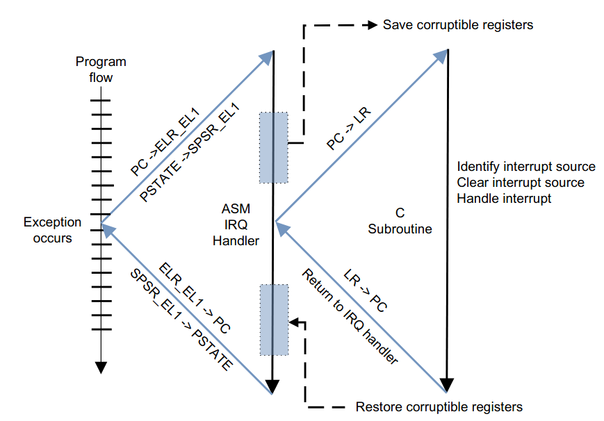
#[no_mangle]
pub extern "C" fn handle_exception( ... ) {
match info.kind {
Kind::Synchronous => {
let syndrome = Syndrome::from(esr);
match syndrome {
Syndrome::Brk(_) => { ... }
Syndrome::Svc(n) => { ... }
}
Kind::Irq => {
let ic = Controller::new();
for v in Interrupt::iter() {
if ic.is_pending(v) {
crate::IRQ.invoke(v, tf);
}
}
}
...
}→ How to provide the illusion of owning the hardware?
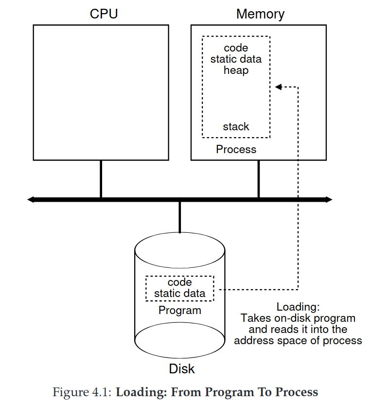
/// A structure that represents the complete state of a process.
#[derive(Debug)]
pub struct Process {
/// The saved trap frame of a process.
pub context: Box<TrapFrame>,
/// The memory allocation used for the process's stack.
pub stack: Stack,
/// The page table describing the Virtual Memory of the process
pub vmap: Box<UserPageTable>,
/// The scheduling state of the process.
pub state: State,
}/// The scheduling state of a process.
pub enum State {
/// The process is ready to be scheduled.
Ready,
/// The process is waiting on an event to occur before it can
/// be scheduled.
Waiting(EventPollFn),
/// The process is currently running.
Running,
/// The process is currently dead (ready to be reclaimed).
Dead,
}/// Type of a function used to determine if a process is ready to
/// be scheduled again. The scheduler calls this function when it
/// is the process's turn to execute. If the function returns
/// `true`, the process is scheduled. If it returns `false`, the
/// process is not scheduled, and this function will be called on
/// the next time slice.
pub type EventPollFn = Box<dyn FnMut(&mut Process) -> bool + Send>;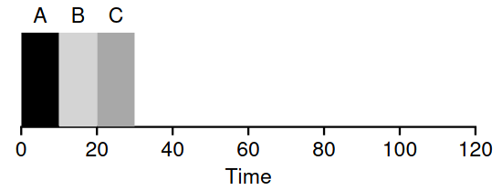
→ Average execution time: (10+20+30)/3 = 20
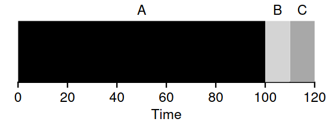
→ Average execution time: (100+110+120)/3 = 110
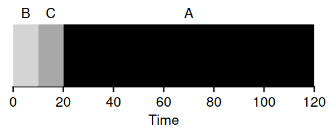
→ Average execution time: (10+20+120)/3 = 50
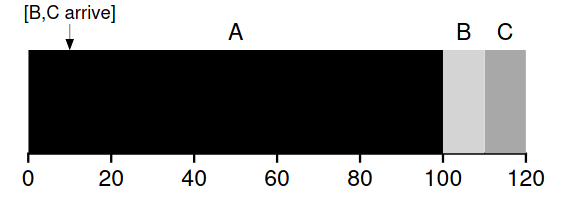
→ Average execution time: (100 + 100 + 110)/3 = 103.3
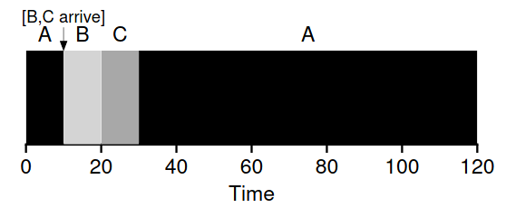
→ Average execution time: (120 + 10 + 20)/3 = 50
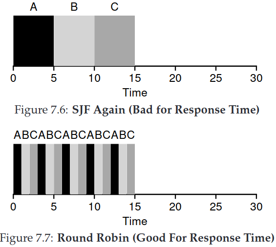
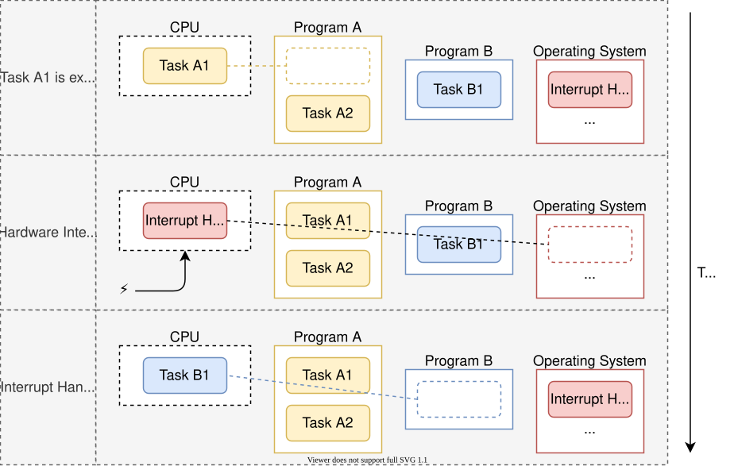
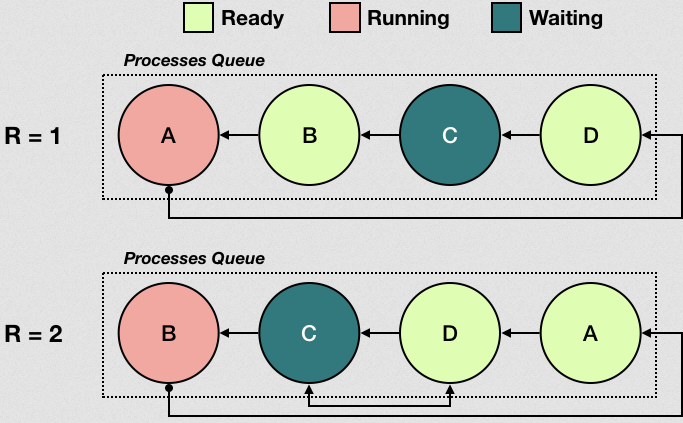
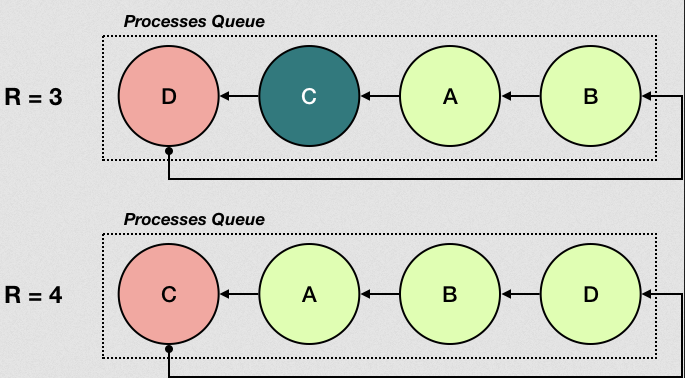
fn switch_to(&mut self, tf: &mut TrapFrame) -> Option<Id> {
for i in 0..self.processes.len() {
if self.processes[i].is_ready() {
// push the selected one to the front
let mut next = self.processes.remove(i).unwrap();
next.state = State::Running;
*tf = *next.context;
self.processes.push_front(next);
return Some(tf.tpidr);
}
}
return None;
}